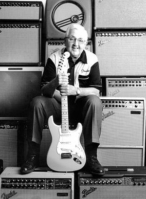

Firma rozpoczęła swoją działalność jako Fender's Radio Service w 1938 w Fullerton w stanie California. Swoją nazwę wzięła od nazwiska założyciela, Clarence'a Leonidasa 'Leo' Fendera. Zajmował się on nie tylko naprawą radioodbiorników, ale także gramofonów, wzmacniaczy audio, systemów nagłośnieniowych oraz wzmacniaczami dedykowanymi dla instrumentów. Oprócz tego zajmował się również sprzedażą nagrań oraz wypożyczaniem zaprojektowanych przez niego systemów nagłośnieniowych. Naprawiając wzmacniacze zainteresował się ich błędami konstrukcyjnymi i zaczął budować wzmacniacze według swojego pomysłu i wprowadzać modyfikacje. W 1945 roku wraz z lokalnym entuzjastą elektroniki Clatyonem Orr'em 'Doc' Kauffmanem założyli K & F Manufacturing Corp. Firma zajmowała się produkcją wzmacniaczy oraz gitar hawajskich. Kauffman wycofał się ze współpracy jeszcze w tym samym roku nie będąc przekonany o opłacalności przedsięwzięcia. W 1946 roku Leo zmienił nazwę na Fender Electric Instrument Company. W 1950 roku jako pierwszy odniósł sukces komercyjny projektując i wprowadzając do sprzedaży gitarę bez klasycznego pudła rezonansowego, z korpusem typu solid body, Telecastera (przeczytaj więcej w Telecaster).
Leo Fender (1909-1991)
Firma odnosiła sukcesy głównie za sprawą niestandardowych jak na tamte czasy kampanii reklamowych. Katalogi z instrumentami zawierały zdjęcia ludzi wykonujących skoki ze spadochronem, podczas wspinaczki górskiej czy surfowania jednocześnie trzymając w rękach którąś z produkowanych gitar. Dzięki temu instrumenty Fendera stały się częścią amerykańskiej popkultury w latach '50 i '60 XX wieku wraz z surfingiem oraz samochodami typu hot-rod. Ogromne zasługi na tym polu trzeba oddać również zespołowi
The Beach Boys, który używając instrumentów z Fullerton spopularyzował surf rocka oraz tzw. „kalifornijską kulturę”.
Zmiana właściciela
W 1965 roku z powodu złego stanu zdrowia Leo Fender sprzedał przedsiębiorstwo potentatowi na amerykańskim rynku medialnym,
CBS. Kwota sprzedaży wynosiła 13 milionów dolarów, czyli o 2 miliony więcej niż CBS zapłaciło za drużynę baseballową New York Yankees rok wcześniej. Zakup przez CBS był traktowany jako szansa na rozwój firmy. Nowy właściciel zrestrukturyzował przedsiębiorstwo tworząc mniejsze podmioty zajmujące się określoną dziedziną instrumentów (gitary elektryczne, akustyczne, wzmacniacze, instrumenty klawiszowe). Niestety przejęcie firmy przez zorganizowaną korporację nastawioną głównie na zysk odbiło się na jakości produkowanych instrumentów. Wprowadzone zmiany polegały na zmniejszeniu kosztów produkcji oraz kosmetycznych zmian w wyglądzie instrumentów. Z tego powodu instrumenty z tzw. „ery CBS” są znacznie mniej poszukiwane przez kolekcjonerów i muzyków niż te z początku działalności przedsiębiorstwa.
Nowa jakość
CBS nie sprawdziło się w zarządzaniu firmą produkującą instrumenty. W tym czasie zaprzestano produkcji Jazzmastera, Jaguara i Mustanga, które nie osiągnęły popularności Telecastera i Stratocastera. Coraz mniej muzyków sięgało po nowe edycje instrumentów, co przełożyło się na problemy finansowe przedsiębiorstwa. W 1985 firma została wykupiona przez dyrektora muzycznego CBS Williama Schultza oraz pracowników. W tym czasie zmieniono nazwę na Fender Musical Instrument Corporation, która obowiązuje do dziś. Schultz wcześniej zdecydował o rozpoczęciu produkcji nowej linii instrumentów w Japonii, zlecając produkcję lokalnym
przedsiębiorstwom, co pozwoliło na przywrócenie płynności finansowej oraz skok jakościowy produktów. Wrócono do produkcji starych modeli z nowymi rozwiązaniami konstrukcyjnymi. Na fali sukcesów w 1991 roku otworzono fabryki w Coronie w stanie Kalifornia oraz w Ensensadzie w Meksyku, która produkuje tańsze wersje instrumentów. Centrala firmy została przeniesiona do Scottsdale w stanie Arizona.

William 'Bill' Schultz (1926-2006)
Obecnie FMIC jest największą korporacją produkującą instrumenty na świecie. Dystrybuuje również instrumenty innych marek takich jak Gretsch czy Jackson.